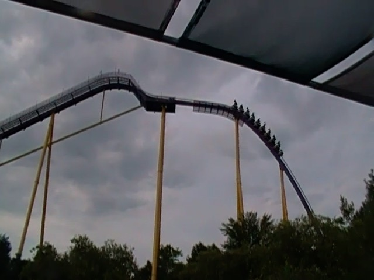
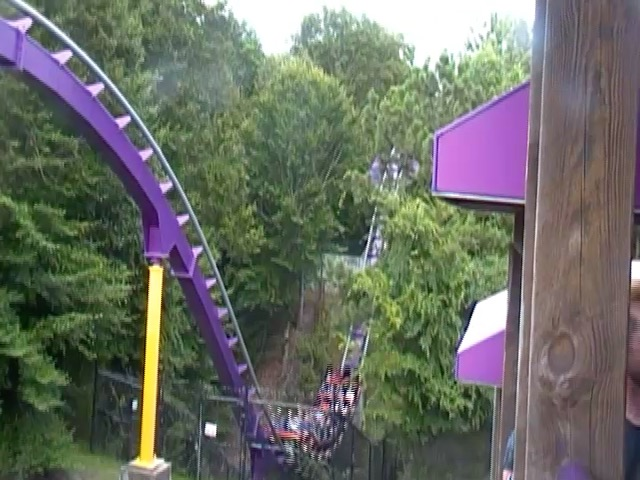
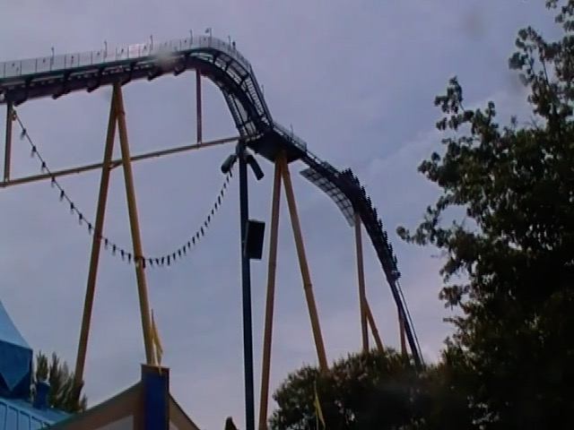
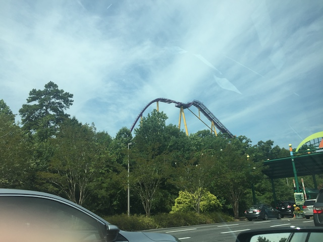

| |
Apollo's Chariot Review

We're here at Busch Gardens Williamsburg. Today's ride we'll be reviewing for you is Apollo's Chariot. This is the parks B&M Hyper Coaster, and....people REALLY seem to like this ride. This CONSTANTLY gets ranked up near the top as one of B&Ms best hyper coasters, and a total airtime machine. Sad to say....no. That's not the case. Don't get me wrong. It's still a really fun ride and all. However, there's no denying that this is one of the weaker B&M Hyper Coasters. It just constantly gets praised because people love Busch Gardens Williamsburg, and it was one of the first ones. Same reason people hype up Nitro so much (except Nitro is better than Apollo's Chariot). But anyways, enough chit chat. Let's hop on. Get in the seats, pull down the clamshell restraints, and we're off! Go up the lifthill, and....there's honestly not much of a view. Busch Gardens Williamsburg is lovely. But Apollo's Chariot is right by the edge, so you mainly get the view of the road. We then go down the pre-drop, before going down the first drop! Got some airtime in the back. But mostly, this thing just pours on speed. So we're really flying now. We then head up into a big airtime hill. Not a ton of airtime here. Some mild floater air, which is fun. But nothing special. But hey. Drop back down, and regain our speed. So that's good. Oh, and I see there's a tent right at the bottom. TAKE THE TENT!!!! Well....that was quick. Immedietly pop out of that, and head up into another airtime hill. Again, nothing too great. But....there's another nice pop of floater air. We then head down a curved drop, which....ooh. That'll spice things up. =) We then head up into a upward helix. Now....this is a pretty weak helix. It's not aggresive like that on Nitro. This doesn't have laterals and just seems like a way to burn speed. Yeah. These helixes really have improved on the later B&M Hypers. Then drop back down, regaining a lot of our speed. Sweet! We head up a sort of banked hill and glide right into the midcourse brakes. Aww. This ride is all about speed. Never a fan of it when hyper coasters have midcourse brakes. >=( But we quickly glide off that and drop back to the ground. And...there's a decent pop of airtime here. Definately my favorite moment of the ride. Go into a smaller airtime hill, which....it's got some decent airtime. We then head into a curved airtime hill. Is this amazing? No. Is there amazing airtime here? No. But it's still a fun element. Curve back up, and head down a tiny dip. Go through a bit of straight track before dip back down into a ditch. That's a lot of fun. Unfortunetly, we rise up, and glide into the brake run. It's now over. It's fun, but honestly, I can think of several better B&M Hypers. But nonetheless, it's a fun ride with some airtime and a lot of speed that's still worth riding if you're at Busch Gardens Williamsburg.
8/10
Location: Busch Gardens Williamsburg
Opened: 1999
Built by: B&M
Last Ridden: July 26, 2019
Apollo's Chariot Photos





Home
|